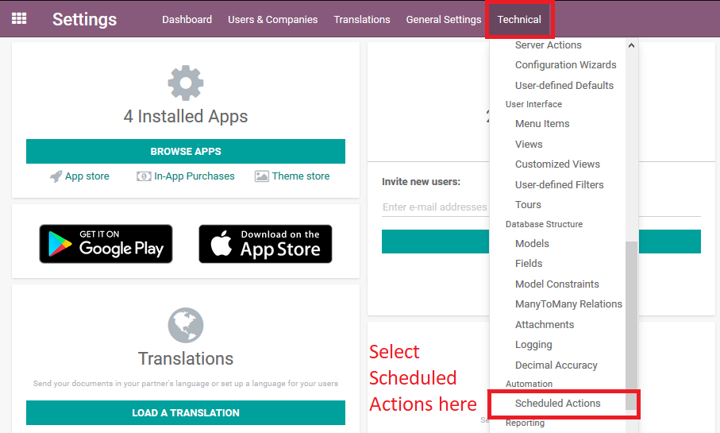
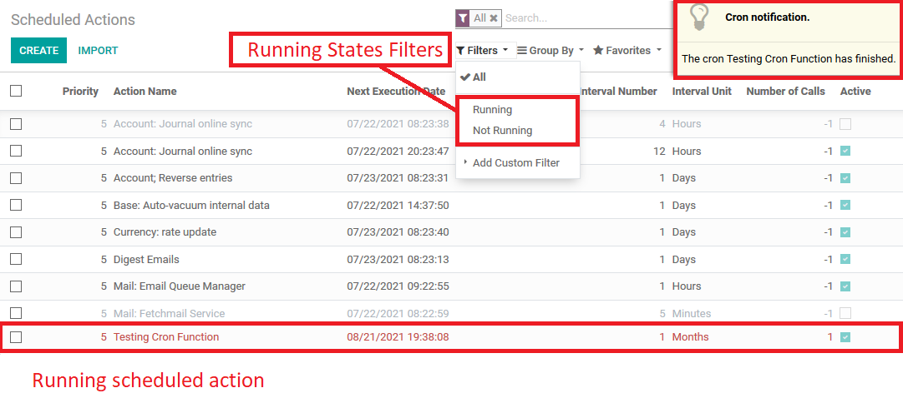

To see cron list, you have to go to main Settings.

-
Select in Technical section (scroll down if needed) and select Scheduled Actions
- Setting / Technical / Scheduled Actions

- Filters:
- Running: filter all Running cron row items.
- Not Running: filter all Not Running cron row items.
- Notifications:
- In right corner show to user the cron notifications box (only started manually).
Its show Start and Finish cron messages
- In right corner show to user the cron notifications box (only started manually).

The running scheduled actions show in the list in Red Color letters to find easily.